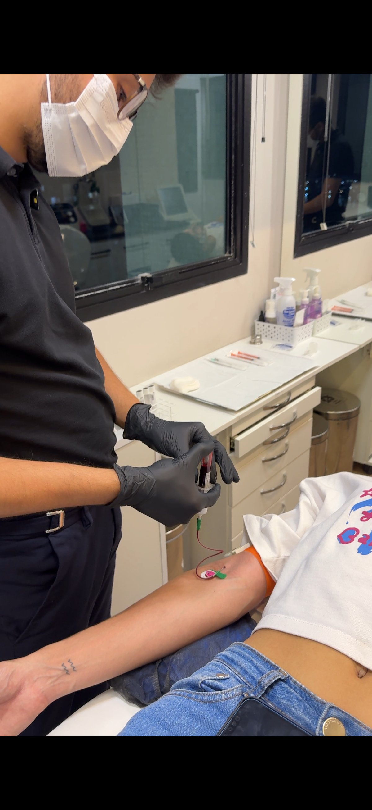
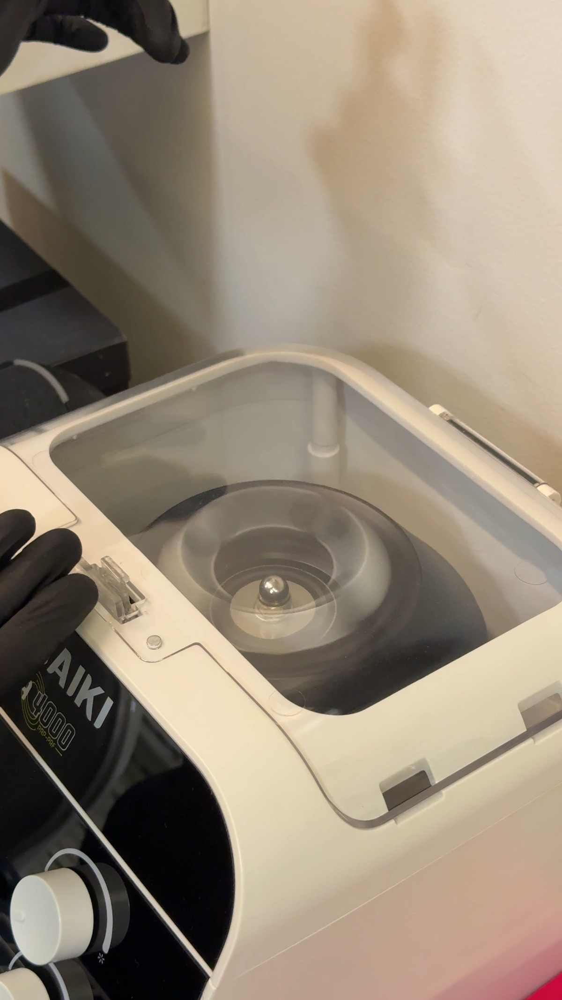

Existe uma categoria de procedimentos que me interessa profundamente: os que trabalham com a biologia do próprio paciente, que estimulam o corpo a se regenerar em vez de simplesmente acrescentar substâncias externas. O i-PRF é exatamente isso. É um dos protocolos que mais uso no meu dia a dia clínico, e também um dos que mais gosto de explicar, porque a lógica por trás dele é ao mesmo tempo simples e poderosa.
Neste artigo, você vai entender o que é o i-PRF, de onde vem, como é feito, quem se beneficia e por que ele se tornou uma peça central no meu planejamento de bioestimulação.
O que é o i-PRF? (e como ele se diferencia do PRP e do PRF)
A sigla i-PRF significa injectable Platelet-Rich Fibrin, em português: fibrina rica em plaquetas injetável. É uma tecnologia desenvolvida a partir da evolução do PRF (Platelet-Rich Fibrin) e do PRP (Plasma Rico em Plaquetas), protocolos já consolidados na odontologia e na cirurgia maxilofacial, que foram adaptados para uso injetável na estética facial.
Você pode ter ouvido falar desse tipo de procedimento com nomes diferentes: PRP facial, PRF injetável, vampire facial, lifting do vampiro ou simplesmente "tratamento com sangue próprio". Todos fazem parte da mesma família de bioestimulação com concentrados sanguíneos autólogos. O i-PRF é a versão mais moderna desse grupo, com um protocolo de centrifugação específico que resulta num material mais rico em leucócitos e fatores de crescimento.
i-PRF, PRF e PRP: qual a diferença?
O PRP usa tubo com anticoagulante e centrifugação mais longa, separando apenas o plasma. O PRF não usa anticoagulante e resulta em gel ou membrana, muito usado em cirurgias. O i-PRF usa tubo sem aditivo, centrifugação mais curta e suave, e resulta num líquido injetável com maior concentração de leucócitos, plaquetas e fibrina. É o mais indicado para aplicações estéticas na pele.
O que acontece dentro do tubo?
A foto abaixo é do meu consultório, depois da centrifugação. Você consegue ver claramente a separação que acontece no tubo: a camada dourada/amarelada no topo é o i-PRF, rico em plaquetas e fatores de crescimento. A camada vermelha escura embaixo são os glóbulos vermelhos, que ficam de fora do procedimento.

Esse é exatamente o tubo branco sem aditivo que uso no meu protocolo. A ausência de anticoagulante é proposital: ela permite que a fibrina se organize naturalmente, criando uma rede tridimensional que serve de suporte para os fatores de crescimento liberados pelas plaquetas.

O que tem dentro do i-PRF?
A composição do i-PRF é o que explica seus resultados. Ao centrifugar o sangue nesse protocolo específico, concentram-se no material final os principais agentes de reparação que o próprio organismo usa para se recuperar de lesões:
- Plaquetas em alta concentração: responsáveis por liberar os fatores de crescimento que estimulam a produção de colágeno e elastina
- Fatores de crescimento (PDGF, TGF-beta, EGF, VEGF): moléculas que sinalizam para as células da pele que é hora de se renovar, se multiplicar e produzir mais matriz extracelular
- Leucócitos: células de defesa que contribuem com o processo regenerativo e têm papel anti-inflamatório
- Fibrina: proteína que forma uma espécie de andaime para que as novas células se organizem e se fixem no tecido
Em conjunto, esses componentes criam um ambiente local de regeneração acelerada, estimulando a pele a produzir mais colágeno, melhorar sua espessura, textura e hidratação de forma gradual e progressiva.
Como é feito o procedimento passo a passo
1. Coleta de sangue
O procedimento começa com uma coleta de sangue venoso simples, geralmente de 10 a 20 ml, dependendo do protocolo adotado. É rápido e idêntico a qualquer coleta laboratorial de rotina.

2. Centrifugação
O sangue coletado é colocado imediatamente na centrífuga com protocolo i-PRF: baixa rotação e curto tempo de processamento, em torno de 3 a 5 minutos. Esse parâmetro é fundamental: uma centrifugação mais rápida ou mais longa separa o material de forma diferente e muda a composição do produto final.

3. Coleta e aplicação do i-PRF
Após a centrifugação, a camada líquida dourada que fica na parte superior do tubo é o i-PRF. Ele é aspirado com seringa logo em seguida, porque começa a polimerizar em poucos minutos. Em seguida, é aplicado via microinjeções intradérmicas nas áreas planejadas.

Tempo de sessão
Da coleta à aplicação final, uma sessão de i-PRF dura em média entre 40 minutos e 1 hora. Não há necessidade de internação e o paciente retorna às atividades no mesmo dia, com cuidados simples de pós-procedimento.
Para que o i-PRF é indicado?
O i-PRF não é um procedimento de resultado imediato ou de mudança dramática. Ele trabalha na qualidade intrínseca da pele, no que não se vê de imediato mas se sente com o tempo: a pele fica mais firme, mais iluminada, com textura mais uniforme e com melhor resposta a outros tratamentos.
As principais indicações são:
Perda de qualidade e firmeza da pele
Com o envelhecimento, a produção de colágeno diminui e a pele perde a capacidade de se regenerar com a mesma eficiência. O i-PRF atua exatamente nesse ponto, reativando os mecanismos de síntese de colágeno e espessando a derme de forma progressiva.
Olheiras e região periorbital
A pele ao redor dos olhos é uma das mais finas e delicadas do corpo, e responde muito bem ao i-PRF. O protocolo melhora a hidratação local, reduz a aparência de olheiras vasculares e melhora a textura da região, sem o risco de complicações que preenchimentos mal aplicados podem causar nessa área.
Pele ressecada, apagada ou com textura irregular
Pacientes que relatam pele "sem viço", opaca ou com poros muito visíveis se beneficiam do i-PRF porque o protocolo melhora a hidratação intrínseca da pele e estimula a renovação celular da camada mais superficial da derme.
Couro cabeludo e queda de cabelo
O i-PRF também tem indicação consolidada no tratamento de alopecia. Aplicado no couro cabeludo, estimula os folículos pilosos, melhora a circulação local e contribui para a recuperação de fios enfraquecidos. É uma das alternativas mais bem documentadas para queda de cabelo de causa não cicatricial.
Potencialização de outros procedimentos
Um dos usos que mais aprecio clinicamente é a combinação do i-PRF com outros protocolos: microagulhamento, bioestimuladores de colágeno, laser. Quando aplicado junto ou logo após esses procedimentos, o i-PRF amplifica a resposta regenerativa e encurta o tempo de recuperação.
Quais resultados posso esperar?
O i-PRF não é o procedimento certo para quem quer mudança imediata. Ele é para quem quer melhora real, progressiva e que dure. Na minha experiência clínica, o que os pacientes relatam com mais frequência após completar o protocolo é:
- Pele mais firme e com espessura visivelmente maior
- Melhora expressiva na hidratação e no brilho da pele
- Textura mais uniforme e poros menos evidentes
- Redução da aparência de olheiras e da frouxidão da pele periorbital
- Melhor resposta a outros procedimentos realizados em conjunto ou depois
Os primeiros sinais costumam aparecer entre 2 e 4 semanas após a primeira sessão. Os resultados mais completos ficam visíveis ao final do protocolo, por volta de 60 a 90 dias, e continuam evoluindo por até 6 meses enquanto o colágeno segue sendo produzido.
Quantas sessões são necessárias?
O protocolo mais utilizado é de 3 a 4 sessões, com intervalo de 3 a 4 semanas entre cada uma. Após a série inicial, a manutenção costuma ser feita com 1 sessão a cada 6 a 12 meses, dependendo do ritmo de envelhecimento de cada paciente e dos procedimentos complementares em andamento.
Não existe um protocolo único para todos. O número de sessões, os intervalos e a combinação com outros procedimentos são definidos na avaliação individual, levando em conta a condição atual da pele, os objetivos e o histórico de tratamentos do paciente.
Por que o i-PRF faz parte do meu protocolo?
A estética que me interessa não é a que muda o rosto de fora para dentro. É a que trabalha com o próprio potencial do organismo, que respeita a identidade de cada paciente e que entrega resultados que não gritam procedimento.
O i-PRF representa bem isso. Ele não preencheu, não relaxou músculo, não acrescentou nada externo. Ele usou o que já estava dentro do paciente para fazer a pele funcionar melhor. O resultado é uma aparência mais descansada, mais saudável, mais presente, sem que ninguém precise perguntar o que você fez.
Essa é a proposta do meu trabalho: estética com intenção clínica, que revela ao invés de transformar. O i-PRF é, dentro dessa lógica, um dos protocolos que melhor representa essa visão.
Perguntas frequentes sobre i-PRF, PRF e PRP
i-PRF é a mesma coisa que PRP?
São da mesma família, mas diferentes. O PRP usa anticoagulante no tubo e centrifugação mais longa. O i-PRF usa tubo sem aditivo e centrifugação mais curta e suave, preservando mais leucócitos e fatores de crescimento. O i-PRF é considerado uma evolução do PRP para uso estético injetável.
i-PRF é o mesmo que o vampire facial ou lifting do vampiro?
Sim, são procedimentos da mesma categoria. O "vampire facial" ou "lifting do vampiro" são nomes populares para tratamentos que usam o próprio sangue do paciente para rejuvenescer a pele. O i-PRF é a versão mais moderna e tecnicamente evoluída desse conceito.
O i-PRF dói?
A coleta de sangue é rápida e simples, igual a um exame de rotina. As microinjeções causam um desconforto leve, semelhante ao de outros procedimentos com agulha fina. O uso de anestesia tópica ou bloqueios locais torna a sessão bastante tolerável para a maioria das pessoas.
Quantas sessões de i-PRF são necessárias?
O protocolo mais comum é de 3 a 4 sessões com intervalo de 3 a 4 semanas entre cada uma. Após a série inicial, uma sessão de manutenção a cada 6 a 12 meses costuma ser suficiente para preservar os resultados.
Quando começo a ver os resultados?
Os primeiros sinais de melhora na textura e hidratação da pele aparecem entre 2 e 4 semanas após a primeira sessão. Os resultados mais expressivos ficam visíveis após completar o protocolo, geralmente entre 60 e 90 dias.
O i-PRF pode ser combinado com outros procedimentos?
Sim. O i-PRF é um excelente aliado de procedimentos como microagulhamento, bioestimuladores, toxina botulínica e preenchimentos. A combinação potencializa os resultados e é determinada pelo profissional conforme o planejamento individual de cada paciente.
Existe risco de alergia?
Praticamente nenhum. Como o material utilizado vem do próprio corpo do paciente, o risco de reação alérgica é muito baixo, o que torna o i-PRF uma das opções mais seguras de bioestimulação disponíveis na estética facial.
Quer saber se o i-PRF é indicado para o seu caso?
Cada pele tem uma história e um protocolo ideal. Agende uma consulta e fazemos juntos um planejamento personalizado.
Agendar Consulta pelo WhatsApp Voltar ao Blog